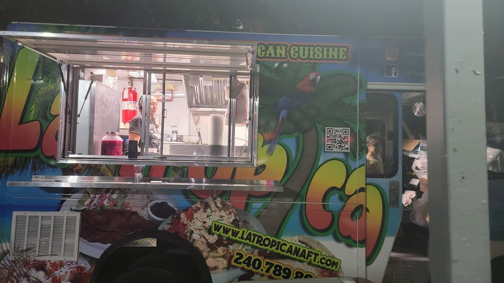
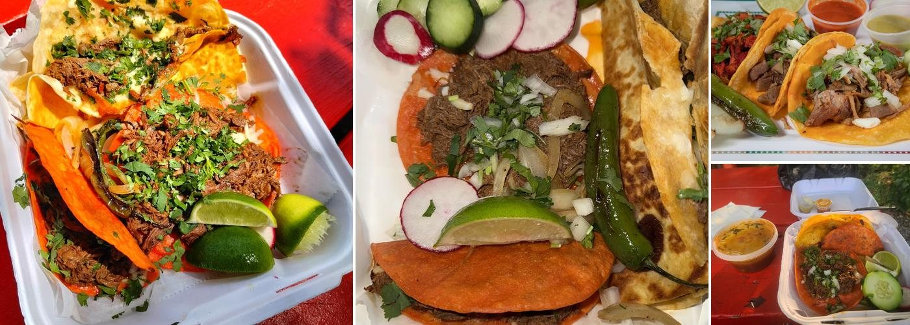
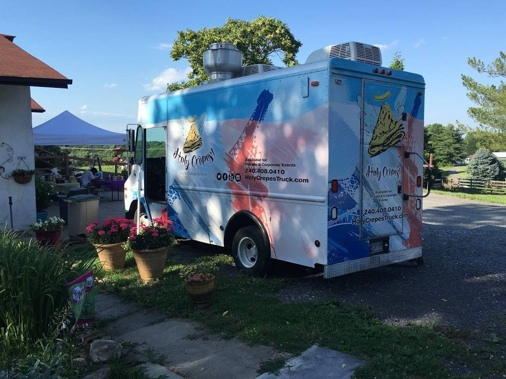

Germantown Food Trucks
Discover Germantown food truck profiles as owners claim them.
Food Truck Finder helps surface Germantown-area truck profiles while keeping unclaimed listings honest until owners verify details.
Claimable truck profiles
App download links
Owner-updated when claimed


Honest status
Seeded profiles are shown as awaiting owner claim, not live or verified.
Germantown discovery
Download the app to follow trucks and check profile details.
Known Truck Profiles
Claimable profiles connected to this market.
These pages are built from seeded Food Truck Finder profile assets. Owners can claim a profile to add accurate schedules, menus, photos, links, and customer-facing details.

Tacos El Pariente Germantown, Maryland Profile awaiting owner claim Claim this truck
Holy Crepes Gaithersburg, Maryland Profile awaiting owner claim Claim this truck